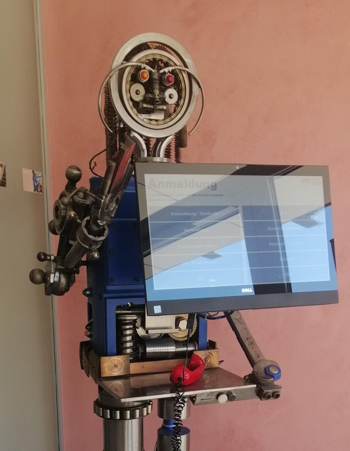

Recursos didàctics
Un repositori viu de webapps, jocs i materials que vaig creant per a l'aula. Cerca per paraula clau o filtra per etapa educativa.

Professora de Matemàtiques · ESO i Batxillerat
all you need is ∫
Llicenciada en Física i professora de Matemàtiques. Combino la meva experiència en el sector industrial i en l'àmbit educatiu, amb la passió per les Matemàtiques, dissenyant recursos útils i visuals que les facin més properes i apassionants.

Un repositori viu de webapps, jocs i materials que vaig creant per a l'aula. Cerca per paraula clau o filtra per etapa educativa.